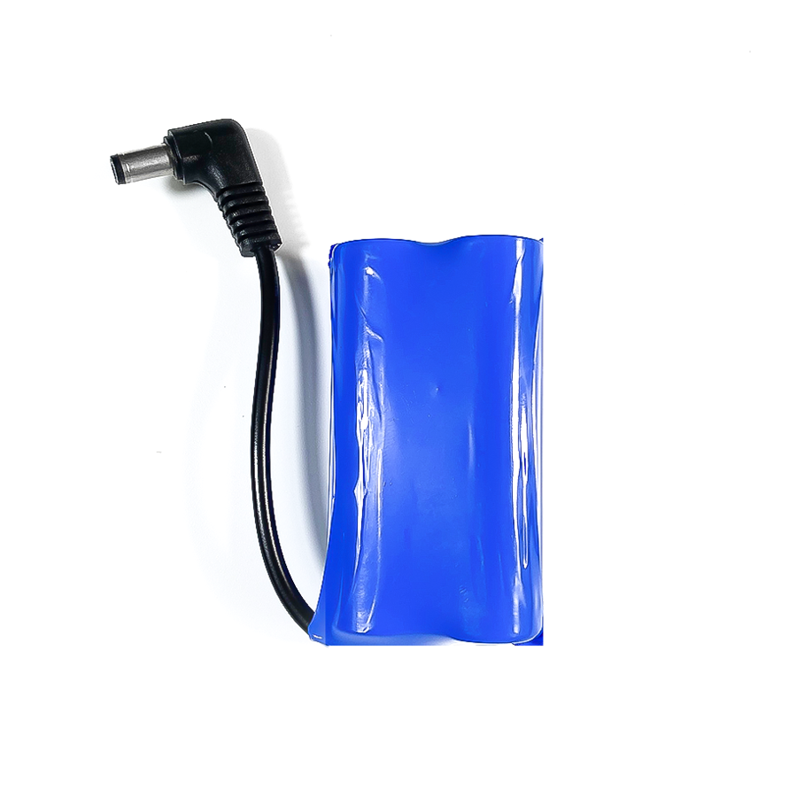

4. Động cơ Servo MG996R

Động cơ Servo MG996R có thể xoay được một góc bất kỳ từ 0 – 180 độ hoặc 0 – 360 độ/. Sản phẩm có kích thước nhỏ gọn và có độ bền, lực kéo khỏe hơn rất nhiều so với động cơ Servo MG90S thông thường.
Sản phẩm phù hợp để ứng dụng vào các ứng dụng sáng tạo như làm cánh tay robot chuyển động, làm robot nhện, cơ cấu quay góc,… tùy vào sở thích của người dùng.
1. Mua sản phẩm

2. Thông số kỹ thuật
Thông số kỹ thuật của động cơ Servo MG996R
Lực kéo ở điện áp 6V ~ 11kg
Có momen xoắn lớn
Điện áp hoạt động: 4,8 ~ 7.2V
Bánh răng: Kim loại
Trọng lượng: Khoảng 55g
Sơ đồ dây nối:
Màu đỏ: Dương nguồn
Màu nâu: Âm nguồn
Màu cam: Truyền tín hiệu
3. Kết nối
Bước 1: Chuẩn bị các thiết bị như sau, đối với động cơ MG996R cần có thêm pin 8.4V 18650.

|

|
|
 |
|---|---|---|---|
Máy tính lập trình Yolo:Bit |
Mạch mở rộng cho Yolo:Bit |
Động cơ Servo MG996R |
Pin 18650 |
{kind=link}
Bước 2: Cắm Yolo:Bit vào mạch mở rộng
Bước 3: Kết nối pin 18650 vào mạch mở rộng
Bước 4: Kết nối servo vào chân P4 trên mạch mở rộng
{kind=link}
4. Hướng dẫn lập trình với OhStem App
Đối với động cơ servo 180 độ:
{kind=link}
{kind=link}
Note
Khi sau khi xác định vị trí góc của servo, bằng câu lệnh trong khối bắt đầu. Bạn hãy nhấn nút để xem sự di chuyển của cánh servo.
Đối với động cơ servo 360 độ:
Sử dụng khối lệnh sau trong danh mục CHÂN CẮM, để điều khiển:
Động cơ servo 360, sẽ có các chế độ hoạt động như sau:
Tốc độ 0: Đứng yên
Tốc độ 100: Tối đa
Tốc độ -100 - 0: Động cơ quay ngược chiều kim đồng hồ
Tốc độ 0- 100: Động cơ quay cùng chiều kim đồng hồ
Gửi chương trình sau xuống Yolo:Bit, để kiểm tra hoạt động của servo:
{kind=link}
{kind=link}
Note
Chương trình được ứng dụng vào các dự án như sáng tạo bánh xe robot, ròng rọc của cáp treo…
5. Hướng dẫn lập trình Arduino
Mở phần mềm Arduino IDE. Xem hướng dẫn lập trình với Arduino tại đây.
Copy đoạn code sau, click vào nút
Verifyđể kiểm tra lỗi chương trình. Sau khi biên dịch không báo lỗi, bạn có thể nạp đoạn code vào board.Điều khiển Servo 180 độ:
#include "YoloBit.h"
#include <Servo.h>
YoloBit yolobit;
// Điều khiển servo 180, quay liên tục từ góc 0 đến 180 độ và ngược lại.
Servo myservo;
int pos = 0; // lưu vị trí của servo
void setup() {
myservo.attach(P4); // kết nối servo vào chân P4
}
void loop() {
for (pos=0; pos<=180; pos++) { // từ 0 đến 180 độ
myservo.write(pos);
delay(15);
}
// Đảo ngược quá trình từ 180 đến 0 độ
for (pos=180; pos>=0; pos--) {
myservo.write(pos);
delay(15);
}
}
Điều khiển Servo 360 độ:
#include <Servo.h>
#include “Yolobit.h”
Servo myservo;
Yolobit yolobit;
int pos = 0;
int Control_Pin = P4;
void setup() {
// Điều khiển servo qua chân P4 của Yolobit
myservo.attach(Control_Pin );
// Servo ở trạng thái đứng yên, ở góc 90 độ
myservo.write(90);
}
void loop() {
// Servo quay về vị trí tối đa ở góc 180 độ trong 1 giây
myservo.write(180);
delay(1000);
// Servo ở trạng thái đứng yên trong 1 giây
myservo.write(90);
delay(1000);
// Servo quay về vị trí tối đa ở góc 0 độ trong 1 giây
myservo.write(0);
delay(1000);
// Servo ở trạng thái đứng yên trong 1 giây
myservo.write(90);
delay(1000);
}